import pandas as pd
import numpy as np
import matplotlib.pyplot as plt
import seaborn as snsExam 1 - From Raw Data to Useful Data
Learning Objectives
Upon finishing this exam, you will be able to:
- Apply Data Integration skills, and collect data from multiple variate sources
- Apply Data Manipulation skills, and integrate data into a uniform dataframe
- Apply Data Understanding skills, and describe the data in statistics
- Apply Data Visualization skills, and communicate the data in graphic approach
- Apply Data Preprocessinng skills, and reduce, normalize, and discretize the data as necessary
- Apply your learning skills, and deal with tasks without given tutorials
- Apply your domain knowledge, to choose appropriate methods based on your judgement.
Question 1: Data Integration (15 points)
You are given with 4 files and they are in this project. You first should read them from the source, and save them to pandas dataframes.
Read CSV
Read the csv file and save it to a dataframe df_student_record_others
df_student_records_others = pd.read_csv('Student_Record_Others.csv')
df_student_records_others.head()| id | name | major | gender | academic | campus | internship | AtRisk | graduate_program | goverment | industry | placement | annual | |
|---|---|---|---|---|---|---|---|---|---|---|---|---|---|
| 0 | CUB0000 | Lisa Tucker | Electric Engineering | M | 140.40 | 4 | 4 | 1 | 0.095158 | 0.120676 | 0.195053 | 0.410887 | 44384.842252 |
| 1 | CUB0001 | Diana Lopez | Computer Science | M | 178.45 | 4 | 13 | 1 | 0.623424 | 0.322178 | 0.535255 | 1.480858 | 136786.533445 |
| 2 | CUB0002 | Angela Huber | Electric Engineering | M | 140.15 | 2 | 6 | 1 | 0.083423 | 0.063620 | 0.222370 | 0.369413 | NaN |
| 3 | CUB0003 | Nicholas Steele | Information Science | M | 176.25 | 17 | 16 | 0 | 0.769059 | 0.797730 | 0.778017 | 2.344805 | 243255.134630 |
| 4 | CUB0004 | Deborah Porter | Computer Science | M | 148.50 | 7 | 2 | 1 | 0.214019 | 0.241057 | 0.200903 | 0.655979 | 51483.725756 |
Read JSON
Read the json file and save it to a dataframe df_student_record_courses_p1
df_student_record_courses_p1 = pd.read_json('P1-Student_Record_Courses.json')
df_student_record_courses_p1.head()| id | c01 | c02 | c03 | c04 | c05 | c06 | c07 | c08 | c09 | c10 | elective | |
|---|---|---|---|---|---|---|---|---|---|---|---|---|
| 0 | CUB0000 | 168.0 | 136.0 | 122.0 | 124.0 | 147.0 | NaN | 108.0 | 122.0 | 151.0 | 177.0 | ['Statistical_Modeling' 'Data_Mining' 'Stats_f... |
| 1 | CUB0001 | 226.5 | 156.0 | 124.0 | 161.0 | 220.0 | 217.0 | 149.0 | 132.0 | 177.0 | 222.0 | ['Data_Science_Methods' 'Deep_Learning' 'Stats... |
| 2 | CUB0002 | 157.5 | 134.0 | 134.0 | NaN | 144.0 | 138.0 | 105.0 | 128.0 | 157.0 | 179.0 | ['Data_Mining' 'Datacenter_Computing' 'Databas... |
| 3 | CUB0003 | 193.5 | 161.0 | 166.0 | 209.0 | 254.0 | 168.0 | 117.0 | 134.0 | 201.0 | 159.0 | ['Python_for_Data_Science' 'Text_Marketing_Ana... |
| 4 | CUB0004 | 180.0 | 138.0 | NaN | 131.0 | 171.0 | 163.0 | 124.0 | 125.0 | 149.0 | 186.0 | ['Statistical_Learning' 'Statistical_Inference... |
Read Sqlite
Read the sqlite file and save it to a dataframe df_student_record_courses_p2
import sqlite3
connect = sqlite3.connect('P2-Student_Record_Courses.sqlite')
cursor = connect.cursor()
query = '''SELECT * FROM sqlite_master WHERE type = 'table';'''
cursor.execute(query)
results = cursor.fetchall()
results[('table',
'P2-Student_Record_Courses',
'P2-Student_Record_Courses',
2,
'CREATE TABLE `P2-Student_Record_Courses` (`stu_id`, `c01`, `c02`, `c03`, `c04`, `c05`, `c06`, `c07`, `c08`, `c09`, `c10`, `elective`)')]query = '''SELECT * FROM 'P2-Student_Record_Courses';'''
cursor.execute(query)
results = cursor.fetchall()
results
df_student_record_courses_p2 = pd.DataFrame(results,columns=df_student_record_courses_p1.columns)df_student_record_courses_p2.head()| id | c01 | c02 | c03 | c04 | c05 | c06 | c07 | c08 | c09 | c10 | elective | |
|---|---|---|---|---|---|---|---|---|---|---|---|---|
| 0 | CUB1000 | 207.0 | 165.0 | 150.0 | 157.0 | 195.0 | 189.0 | 134.0 | 149.0 | 192.0 | 214.0 | ['Effective_Communication' 'Datacenter_Computi... |
| 1 | CUB1001 | 187.5 | 140.0 | 129.0 | 143.0 | 180.0 | 169.0 | 123.0 | 124.0 | 165.0 | 197.0 | ['High_Performance_and_Parallel_Computing' 'St... |
| 2 | CUB1002 | 210.0 | 136.0 | 111.0 | 139.0 | 190.0 | 140.0 | 125.0 | 145.0 | 196.0 | ['Data_Structures_and_Algorithms' 'R_for_Data_... | |
| 3 | CUB1003 | 219.0 | 147.0 | 124.0 | 199.0 | 183.0 | 143.0 | 131.0 | 171.0 | 209.0 | ['High_Performance_and_Parallel_Computing'\n '... | |
| 4 | CUB1004 | 219.0 | 159.0 | 210.0 | 272.0 | 195.0 | 136.0 | 126.0 | 180.0 | 161.0 | ['Statistical_Modeling' 'Data_Mining' 'Data_Sc... |
Read HTML
Read the html file and save it to a dataframe df_student_record_courses_p3. Hint: You may use the read_html function in pandas directly.
# pd.read_html() returns a list of dfs
p3 = pd.read_html('P3-Student_Record_Courses.html')[0]
p3| 0 | 1 | 2 | 3 | 4 | 5 | 6 | 7 | 8 | 9 | 10 | 11 | |
|---|---|---|---|---|---|---|---|---|---|---|---|---|
| 0 | sid | c01 | c02 | c03 | c04 | c05 | c06 | c07 | c08 | c09 | c10 | elective |
| 1 | CUB2000 | 205.5 | 138.0 | 118.0 | 144.0 | 181.0 | 167.0 | 124.0 | 121.0 | 163.0 | 194.0 | ['R_for_Data_Science' 'Python_for_Data_Science... |
| 2 | CUB2001 | 201.0 | 159.0 | 152.0 | 201.0 | 238.0 | 178.0 | 118.0 | 131.0 | 195.0 | 169.0 | ['Vital_Skills_for_Data_Scientists' 'R_for_Dat... |
| 3 | CUB2002 | 193.5 | 129.0 | 108.0 | 134.0 | 177.0 | 166.0 | 128.0 | 114.0 | 158.0 | 201.0 | ['Data_Science_Methods' 'Data_Structures_and_A... |
| 4 | CUB2003 | 211.5 | 147.0 | 126.0 | 138.0 | 185.0 | 181.0 | 123.0 | 118.0 | 188.0 | 226.0 | ['Stats_for_Data_Science' 'Data_Science_Method... |
| ... | ... | ... | ... | ... | ... | ... | ... | ... | ... | ... | ... | ... |
| 996 | CUB2995 | 211.5 | 160.0 | NaN | 190.0 | 249.0 | 192.0 | 142.0 | 145.0 | 168.0 | 163.0 | ['Nature_Language_Processing' 'Datacenter_Comp... |
| 997 | CUB2996 | 183.0 | 149.0 | 139.0 | 142.0 | 174.0 | 170.0 | 114.0 | 131.0 | 176.0 | 198.0 | ['Deep_Learning' 'Effective_Communication' 'D... |
| 998 | CUB2997 | 202.5 | 151.0 | NaN | 178.0 | 236.0 | 169.0 | 136.0 | 139.0 | 158.0 | 152.0 | ['Statistical_Inference' 'Stats_for_Data_Scien... |
| 999 | CUB2998 | 211.5 | 139.0 | 135.0 | 146.0 | 186.0 | 181.0 | 116.0 | 109.0 | 180.0 | 210.0 | ['Neural_Networks' 'Effective_Communication' '... |
| 1000 | CUB2999 | 189.0 | 138.0 | 126.0 | 136.0 | 171.0 | 167.0 | 118.0 | 117.0 | 169.0 | 202.0 | ['Data_Mining' 'Big_Data' 'Machine_Learning' '... |
1001 rows × 12 columns
# data cleaning
'''
for some reason the column names got read in as the first row of the df, so going to do some preliminary
data cleaning so that column names match the rest of the p1-p3 dfs
'''
df_student_record_courses_p3 = p3.rename(columns=p3.iloc[0]).loc[1:]
df_student_record_courses_p3 = df_student_record_courses_p3.rename(columns={'sid':'id'})
df_student_record_courses_p3.head()| id | c01 | c02 | c03 | c04 | c05 | c06 | c07 | c08 | c09 | c10 | elective | |
|---|---|---|---|---|---|---|---|---|---|---|---|---|
| 1 | CUB2000 | 205.5 | 138.0 | 118.0 | 144.0 | 181.0 | 167.0 | 124.0 | 121.0 | 163.0 | 194.0 | ['R_for_Data_Science' 'Python_for_Data_Science... |
| 2 | CUB2001 | 201.0 | 159.0 | 152.0 | 201.0 | 238.0 | 178.0 | 118.0 | 131.0 | 195.0 | 169.0 | ['Vital_Skills_for_Data_Scientists' 'R_for_Dat... |
| 3 | CUB2002 | 193.5 | 129.0 | 108.0 | 134.0 | 177.0 | 166.0 | 128.0 | 114.0 | 158.0 | 201.0 | ['Data_Science_Methods' 'Data_Structures_and_A... |
| 4 | CUB2003 | 211.5 | 147.0 | 126.0 | 138.0 | 185.0 | 181.0 | 123.0 | 118.0 | 188.0 | 226.0 | ['Stats_for_Data_Science' 'Data_Science_Method... |
| 5 | CUB2004 | 193.5 | 162.0 | 159.0 | 206.0 | NaN | 175.0 | 121.0 | 135.0 | 191.0 | 157.0 | ['Effective_Communication' 'Statistical_Modeli... |
Reasoning
Answer following questions using one or two sentences. 1. Is there any difficulty you met in finishing this question? If yes, how did you solve it? 2. If you were told to integrate data from multiple sources, what difficuties you would expect?
Answer to 1: I still haven’t gotten used to reading data from SQL, so I had some difficulties reading that data in. I had to re-read the SQL DeepNote tutorial to help read in the information. I couldn’t figure out how to get the column names from the sqlite data table, so I just used the column names from the
df_student_record_courses_p1columns (because I knew they matched, but that wasn’t exactly a long-term solution).
Answer to 2: If I had to integrate data from multiple sources, I would expect to encounter dealing with different data formats like this. Although, this was probably the most optimal situation where all columns were the same. (So for instance, I probably wouldn’t have been able to reuse the same column names as p1 for p2.
Question 2: Data Manipulation (15 points)
You are now having four dataframes, and you should integrate them as one dataframe for further processing.
Integrate Parts
Integrate your dataframes df_student_record_courses_p1, df_student_record_courses_p2, and df_student_record_courses_p3to a dataframe df_student_record_courses
df_student_record_courses = pd.concat([df_student_record_courses_p1,df_student_record_courses_p2,
df_student_record_courses_p3])
df_student_record_courses| id | c01 | c02 | c03 | c04 | c05 | c06 | c07 | c08 | c09 | c10 | elective | |
|---|---|---|---|---|---|---|---|---|---|---|---|---|
| 0 | CUB0000 | 168.0 | 136.0 | 122.0 | 124.0 | 147.0 | NaN | 108.0 | 122.0 | 151.0 | 177.0 | ['Statistical_Modeling' 'Data_Mining' 'Stats_f... |
| 1 | CUB0001 | 226.5 | 156.0 | 124.0 | 161.0 | 220.0 | 217.0 | 149.0 | 132.0 | 177.0 | 222.0 | ['Data_Science_Methods' 'Deep_Learning' 'Stats... |
| 2 | CUB0002 | 157.5 | 134.0 | 134.0 | NaN | 144.0 | 138.0 | 105.0 | 128.0 | 157.0 | 179.0 | ['Data_Mining' 'Datacenter_Computing' 'Databas... |
| 3 | CUB0003 | 193.5 | 161.0 | 166.0 | 209.0 | 254.0 | 168.0 | 117.0 | 134.0 | 201.0 | 159.0 | ['Python_for_Data_Science' 'Text_Marketing_Ana... |
| 4 | CUB0004 | 180.0 | 138.0 | NaN | 131.0 | 171.0 | 163.0 | 124.0 | 125.0 | 149.0 | 186.0 | ['Statistical_Learning' 'Statistical_Inference... |
| ... | ... | ... | ... | ... | ... | ... | ... | ... | ... | ... | ... | ... |
| 996 | CUB2995 | 211.5 | 160.0 | NaN | 190.0 | 249.0 | 192.0 | 142.0 | 145.0 | 168.0 | 163.0 | ['Nature_Language_Processing' 'Datacenter_Comp... |
| 997 | CUB2996 | 183.0 | 149.0 | 139.0 | 142.0 | 174.0 | 170.0 | 114.0 | 131.0 | 176.0 | 198.0 | ['Deep_Learning' 'Effective_Communication' 'D... |
| 998 | CUB2997 | 202.5 | 151.0 | NaN | 178.0 | 236.0 | 169.0 | 136.0 | 139.0 | 158.0 | 152.0 | ['Statistical_Inference' 'Stats_for_Data_Scien... |
| 999 | CUB2998 | 211.5 | 139.0 | 135.0 | 146.0 | 186.0 | 181.0 | 116.0 | 109.0 | 180.0 | 210.0 | ['Neural_Networks' 'Effective_Communication' '... |
| 1000 | CUB2999 | 189.0 | 138.0 | 126.0 | 136.0 | 171.0 | 167.0 | 118.0 | 117.0 | 169.0 | 202.0 | ['Data_Mining' 'Big_Data' 'Machine_Learning' '... |
3000 rows × 12 columns
Integrate All
Integrate your dataframes df_student_record_courses and df_student_record_others, and name it as df_student_record
df_student_record = pd.merge(df_student_records_others,df_student_record_courses,how='left',on='id')
df_student_record| id | name | major | gender | academic | campus | internship | AtRisk | graduate_program | goverment | ... | c02 | c03 | c04 | c05 | c06 | c07 | c08 | c09 | c10 | elective | |
|---|---|---|---|---|---|---|---|---|---|---|---|---|---|---|---|---|---|---|---|---|---|
| 0 | CUB0000 | Lisa Tucker | Electric Engineering | M | 140.40 | 4 | 4 | 1 | 0.095158 | 0.120676 | ... | 136.0 | 122.0 | 124.0 | 147.0 | NaN | 108.0 | 122.0 | 151.0 | 177.0 | ['Statistical_Modeling' 'Data_Mining' 'Stats_f... |
| 1 | CUB0001 | Diana Lopez | Computer Science | M | 178.45 | 4 | 13 | 1 | 0.623424 | 0.322178 | ... | 156.0 | 124.0 | 161.0 | 220.0 | 217.0 | 149.0 | 132.0 | 177.0 | 222.0 | ['Data_Science_Methods' 'Deep_Learning' 'Stats... |
| 2 | CUB0002 | Angela Huber | Electric Engineering | M | 140.15 | 2 | 6 | 1 | 0.083423 | 0.063620 | ... | 134.0 | 134.0 | NaN | 144.0 | 138.0 | 105.0 | 128.0 | 157.0 | 179.0 | ['Data_Mining' 'Datacenter_Computing' 'Databas... |
| 3 | CUB0003 | Nicholas Steele | Information Science | M | 176.25 | 17 | 16 | 0 | 0.769059 | 0.797730 | ... | 161.0 | 166.0 | 209.0 | 254.0 | 168.0 | 117.0 | 134.0 | 201.0 | 159.0 | ['Python_for_Data_Science' 'Text_Marketing_Ana... |
| 4 | CUB0004 | Deborah Porter | Computer Science | M | 148.50 | 7 | 2 | 1 | 0.214019 | 0.241057 | ... | 138.0 | NaN | 131.0 | 171.0 | 163.0 | 124.0 | 125.0 | 149.0 | 186.0 | ['Statistical_Learning' 'Statistical_Inference... |
| ... | ... | ... | ... | ... | ... | ... | ... | ... | ... | ... | ... | ... | ... | ... | ... | ... | ... | ... | ... | ... | ... |
| 2995 | CUB2995 | Ricardo Gallegos | Others | M | 176.25 | 13 | 9 | 0 | 0.671989 | 0.604092 | ... | 160.0 | NaN | 190.0 | 249.0 | 192.0 | 142.0 | 145.0 | 168.0 | 163.0 | ['Nature_Language_Processing' 'Datacenter_Comp... |
| 2996 | CUB2996 | Meagan Baird | Electric Engineering | M | 157.60 | 6 | 16 | 0 | 0.414592 | 0.341335 | ... | 149.0 | 139.0 | 142.0 | 174.0 | 170.0 | 114.0 | 131.0 | 176.0 | 198.0 | ['Deep_Learning' 'Effective_Communication' 'D... |
| 2997 | CUB2997 | Stephanie Duncan | Others | F | 165.15 | 17 | 4 | 0 | 0.547043 | 0.669662 | ... | 151.0 | NaN | 178.0 | 236.0 | 169.0 | 136.0 | 139.0 | 158.0 | 152.0 | ['Statistical_Inference' 'Stats_for_Data_Scien... |
| 2998 | CUB2998 | David Stevens | Mathmatics | F | 161.35 | 4 | 12 | 1 | 0.408073 | 0.254124 | ... | 139.0 | 135.0 | 146.0 | 186.0 | 181.0 | 116.0 | 109.0 | 180.0 | 210.0 | ['Neural_Networks' 'Effective_Communication' '... |
| 2999 | CUB2999 | Angela Preston | Mathmatics | F | 153.30 | 2 | 13 | 1 | 0.294167 | 0.162006 | ... | 138.0 | 126.0 | 136.0 | 171.0 | 167.0 | 118.0 | 117.0 | 169.0 | 202.0 | ['Data_Mining' 'Big_Data' 'Machine_Learning' '... |
3000 rows × 24 columns
Assertions
After the integration, make sure your dataframe is having correct index and appropriate data type
# because I left-joined the dataframes technically the index should be fine
# (only concating reuses indices thus messing up overall index)
# but it doesn't hurt to reset anyway
df_student_record.reset_index(drop=True,inplace=True)
df_student_record| id | name | major | gender | academic | campus | internship | AtRisk | graduate_program | goverment | ... | c02 | c03 | c04 | c05 | c06 | c07 | c08 | c09 | c10 | elective | |
|---|---|---|---|---|---|---|---|---|---|---|---|---|---|---|---|---|---|---|---|---|---|
| 0 | CUB0000 | Lisa Tucker | Electric Engineering | M | 140.40 | 4 | 4 | 1 | 0.095158 | 0.120676 | ... | 136.0 | 122.0 | 124.0 | 147.0 | NaN | 108.0 | 122.0 | 151.0 | 177.0 | ['Statistical_Modeling' 'Data_Mining' 'Stats_f... |
| 1 | CUB0001 | Diana Lopez | Computer Science | M | 178.45 | 4 | 13 | 1 | 0.623424 | 0.322178 | ... | 156.0 | 124.0 | 161.0 | 220.0 | 217.0 | 149.0 | 132.0 | 177.0 | 222.0 | ['Data_Science_Methods' 'Deep_Learning' 'Stats... |
| 2 | CUB0002 | Angela Huber | Electric Engineering | M | 140.15 | 2 | 6 | 1 | 0.083423 | 0.063620 | ... | 134.0 | 134.0 | NaN | 144.0 | 138.0 | 105.0 | 128.0 | 157.0 | 179.0 | ['Data_Mining' 'Datacenter_Computing' 'Databas... |
| 3 | CUB0003 | Nicholas Steele | Information Science | M | 176.25 | 17 | 16 | 0 | 0.769059 | 0.797730 | ... | 161.0 | 166.0 | 209.0 | 254.0 | 168.0 | 117.0 | 134.0 | 201.0 | 159.0 | ['Python_for_Data_Science' 'Text_Marketing_Ana... |
| 4 | CUB0004 | Deborah Porter | Computer Science | M | 148.50 | 7 | 2 | 1 | 0.214019 | 0.241057 | ... | 138.0 | NaN | 131.0 | 171.0 | 163.0 | 124.0 | 125.0 | 149.0 | 186.0 | ['Statistical_Learning' 'Statistical_Inference... |
| ... | ... | ... | ... | ... | ... | ... | ... | ... | ... | ... | ... | ... | ... | ... | ... | ... | ... | ... | ... | ... | ... |
| 2995 | CUB2995 | Ricardo Gallegos | Others | M | 176.25 | 13 | 9 | 0 | 0.671989 | 0.604092 | ... | 160.0 | NaN | 190.0 | 249.0 | 192.0 | 142.0 | 145.0 | 168.0 | 163.0 | ['Nature_Language_Processing' 'Datacenter_Comp... |
| 2996 | CUB2996 | Meagan Baird | Electric Engineering | M | 157.60 | 6 | 16 | 0 | 0.414592 | 0.341335 | ... | 149.0 | 139.0 | 142.0 | 174.0 | 170.0 | 114.0 | 131.0 | 176.0 | 198.0 | ['Deep_Learning' 'Effective_Communication' 'D... |
| 2997 | CUB2997 | Stephanie Duncan | Others | F | 165.15 | 17 | 4 | 0 | 0.547043 | 0.669662 | ... | 151.0 | NaN | 178.0 | 236.0 | 169.0 | 136.0 | 139.0 | 158.0 | 152.0 | ['Statistical_Inference' 'Stats_for_Data_Scien... |
| 2998 | CUB2998 | David Stevens | Mathmatics | F | 161.35 | 4 | 12 | 1 | 0.408073 | 0.254124 | ... | 139.0 | 135.0 | 146.0 | 186.0 | 181.0 | 116.0 | 109.0 | 180.0 | 210.0 | ['Neural_Networks' 'Effective_Communication' '... |
| 2999 | CUB2999 | Angela Preston | Mathmatics | F | 153.30 | 2 | 13 | 1 | 0.294167 | 0.162006 | ... | 138.0 | 126.0 | 136.0 | 171.0 | 167.0 | 118.0 | 117.0 | 169.0 | 202.0 | ['Data_Mining' 'Big_Data' 'Machine_Learning' '... |
3000 rows × 24 columns
df_student_record.dtypesid object
name object
major object
gender object
academic float64
campus int64
internship int64
AtRisk int64
graduate_program float64
goverment float64
industry float64
placement float64
annual float64
c01 object
c02 object
c03 object
c04 object
c05 object
c06 object
c07 object
c08 object
c09 object
c10 object
elective object
dtype: objectcols = ['c01','c02','c03','c04','c05','c06','c07','c08','c09','c10']
df_student_record[cols] = df_student_record[cols].apply(pd.to_numeric)
df_student_record.dtypesid object
name object
major object
gender object
academic float64
campus int64
internship int64
AtRisk int64
graduate_program float64
goverment float64
industry float64
placement float64
annual float64
c01 float64
c02 float64
c03 float64
c04 float64
c05 float64
c06 float64
c07 float64
c08 float64
c09 float64
c10 float64
elective object
dtype: objectdf_student_record| id | name | major | gender | academic | campus | internship | AtRisk | graduate_program | goverment | ... | c02 | c03 | c04 | c05 | c06 | c07 | c08 | c09 | c10 | elective | |
|---|---|---|---|---|---|---|---|---|---|---|---|---|---|---|---|---|---|---|---|---|---|
| 0 | CUB0000 | Lisa Tucker | Electric Engineering | M | 140.40 | 4 | 4 | 1 | 0.095158 | 0.120676 | ... | 136.0 | 122.0 | 124.0 | 147.0 | NaN | 108.0 | 122.0 | 151.0 | 177.0 | ['Statistical_Modeling' 'Data_Mining' 'Stats_f... |
| 1 | CUB0001 | Diana Lopez | Computer Science | M | 178.45 | 4 | 13 | 1 | 0.623424 | 0.322178 | ... | 156.0 | 124.0 | 161.0 | 220.0 | 217.0 | 149.0 | 132.0 | 177.0 | 222.0 | ['Data_Science_Methods' 'Deep_Learning' 'Stats... |
| 2 | CUB0002 | Angela Huber | Electric Engineering | M | 140.15 | 2 | 6 | 1 | 0.083423 | 0.063620 | ... | 134.0 | 134.0 | NaN | 144.0 | 138.0 | 105.0 | 128.0 | 157.0 | 179.0 | ['Data_Mining' 'Datacenter_Computing' 'Databas... |
| 3 | CUB0003 | Nicholas Steele | Information Science | M | 176.25 | 17 | 16 | 0 | 0.769059 | 0.797730 | ... | 161.0 | 166.0 | 209.0 | 254.0 | 168.0 | 117.0 | 134.0 | 201.0 | 159.0 | ['Python_for_Data_Science' 'Text_Marketing_Ana... |
| 4 | CUB0004 | Deborah Porter | Computer Science | M | 148.50 | 7 | 2 | 1 | 0.214019 | 0.241057 | ... | 138.0 | NaN | 131.0 | 171.0 | 163.0 | 124.0 | 125.0 | 149.0 | 186.0 | ['Statistical_Learning' 'Statistical_Inference... |
| ... | ... | ... | ... | ... | ... | ... | ... | ... | ... | ... | ... | ... | ... | ... | ... | ... | ... | ... | ... | ... | ... |
| 2995 | CUB2995 | Ricardo Gallegos | Others | M | 176.25 | 13 | 9 | 0 | 0.671989 | 0.604092 | ... | 160.0 | NaN | 190.0 | 249.0 | 192.0 | 142.0 | 145.0 | 168.0 | 163.0 | ['Nature_Language_Processing' 'Datacenter_Comp... |
| 2996 | CUB2996 | Meagan Baird | Electric Engineering | M | 157.60 | 6 | 16 | 0 | 0.414592 | 0.341335 | ... | 149.0 | 139.0 | 142.0 | 174.0 | 170.0 | 114.0 | 131.0 | 176.0 | 198.0 | ['Deep_Learning' 'Effective_Communication' 'D... |
| 2997 | CUB2997 | Stephanie Duncan | Others | F | 165.15 | 17 | 4 | 0 | 0.547043 | 0.669662 | ... | 151.0 | NaN | 178.0 | 236.0 | 169.0 | 136.0 | 139.0 | 158.0 | 152.0 | ['Statistical_Inference' 'Stats_for_Data_Scien... |
| 2998 | CUB2998 | David Stevens | Mathmatics | F | 161.35 | 4 | 12 | 1 | 0.408073 | 0.254124 | ... | 139.0 | 135.0 | 146.0 | 186.0 | 181.0 | 116.0 | 109.0 | 180.0 | 210.0 | ['Neural_Networks' 'Effective_Communication' '... |
| 2999 | CUB2999 | Angela Preston | Mathmatics | F | 153.30 | 2 | 13 | 1 | 0.294167 | 0.162006 | ... | 138.0 | 126.0 | 136.0 | 171.0 | 167.0 | 118.0 | 117.0 | 169.0 | 202.0 | ['Data_Mining' 'Big_Data' 'Machine_Learning' '... |
3000 rows × 24 columns
Reasoning
Answer following questions using one or two sentences. 1. Is there any difficulty you met in finishing this question? If yes, how did you solve it?
JK answer: I have quite a bit of experience with concatenating and merging data frames, so I did not encounter many difficulties in this problem
Question 3: Data Understanding (15 points)
Continue with df_student_record. You are having one dataframe. It is the time to dicpit your data with statsitsics
A Big Picture
Show the major characteristics of your data, such as # of objects, # of attributes, # of null values etc.
df_student_record.info()<class 'pandas.core.frame.DataFrame'>
RangeIndex: 3000 entries, 0 to 2999
Data columns (total 24 columns):
# Column Non-Null Count Dtype
--- ------ -------------- -----
0 id 3000 non-null object
1 name 3000 non-null object
2 major 3000 non-null object
3 gender 3000 non-null object
4 academic 3000 non-null float64
5 campus 3000 non-null int64
6 internship 3000 non-null int64
7 AtRisk 3000 non-null int64
8 graduate_program 3000 non-null float64
9 goverment 3000 non-null float64
10 industry 3000 non-null float64
11 placement 3000 non-null float64
12 annual 2852 non-null float64
13 c01 2841 non-null float64
14 c02 2848 non-null float64
15 c03 2864 non-null float64
16 c04 2861 non-null float64
17 c05 2849 non-null float64
18 c06 2860 non-null float64
19 c07 2847 non-null float64
20 c08 2848 non-null float64
21 c09 2834 non-null float64
22 c10 2868 non-null float64
23 elective 3000 non-null object
dtypes: float64(16), int64(3), object(5)
memory usage: 562.6+ KBCentral Tendency
Show the statistics related to Central Tendency of FIVE columns
# central tendencies = mean, median, mode, midrange
ct5 = ['academic','c01','c02','c03','c04']
def getCentral(df,col):
mn = df[col].min()
mx = df[col].max()
avg = df[col].mean()
med = df[col].median()
mode = df[col].mode().iloc[0]
mid = (mx-mn)/2
central = pd.concat([mn,mx,avg,med,mode,mid],axis=1)
central.columns = ['Min','Max','Mean','Median','Mode','Mid-range']
return centralgetCentral(df_student_record,ct5)| Min | Max | Mean | Median | Mode | Mid-range | |
|---|---|---|---|---|---|---|
| academic | 133.05 | 189.95 | 161.981400 | 161.85 | 154.1 | 28.45 |
| c01 | 154.50 | 247.50 | 200.346885 | 201.00 | 193.5 | 46.50 |
| c02 | 120.00 | 173.00 | 146.357444 | 146.00 | 146.0 | 26.50 |
| c03 | 93.00 | 172.00 | 128.698324 | 128.00 | 131.0 | 39.50 |
| c04 | 115.00 | 218.00 | 157.319119 | 150.00 | 137.0 | 51.50 |
Dispersion
Show the statistics related to Dispersion of ANOTHER FIVE columns
dsp5 = ['internship','c05','c06','c07','c08','c09']
def getDispersion(df,col):
rng = df[col].max() - df[col].min()
quantiles = df[col].quantile([0.25,0.5,0.75])
IQR = quantiles.loc[0.75] - quantiles.loc[0.25]
var = df[col].var()
std = df[col].std()
disp = pd.concat([rng,quantiles.transpose(),IQR,var,std],axis=1)
disp.columns = ['Range','Q1','Q2','Q3','IQR','Variance','Standard Dev']
return dispgetDispersion(df_student_record,dsp5)| Range | Q1 | Q2 | Q3 | IQR | Variance | Standard Dev | |
|---|---|---|---|---|---|---|---|
| internship | 25.0 | 6.0 | 10.0 | 14.0 | 8.0 | 28.524080 | 5.340794 |
| c05 | 137.0 | 178.0 | 193.0 | 224.0 | 46.0 | 897.901529 | 29.965005 |
| c06 | 88.0 | 163.0 | 175.5 | 189.0 | 26.0 | 315.510597 | 17.762618 |
| c07 | 58.0 | 119.0 | 126.0 | 134.0 | 15.0 | 111.570709 | 10.562704 |
| c08 | 54.0 | 119.0 | 126.0 | 133.0 | 14.0 | 102.481903 | 10.123335 |
| c09 | 79.0 | 160.0 | 170.0 | 180.0 | 20.0 | 203.985492 | 14.282349 |
Correlation
Show the correlation among all numeric attributes
correlation = df_student_record.corr()
correlation| academic | campus | internship | AtRisk | graduate_program | goverment | industry | placement | annual | c01 | c02 | c03 | c04 | c05 | c06 | c07 | c08 | c09 | c10 | |
|---|---|---|---|---|---|---|---|---|---|---|---|---|---|---|---|---|---|---|---|
| academic | 1.000000 | 0.144321 | 0.755635 | -0.277774 | 0.931932 | 0.431891 | 0.832214 | 0.775286 | 0.789714 | 0.773860 | 0.909874 | 0.650760 | 0.595865 | 0.636594 | 0.775807 | 0.614708 | 0.559077 | 0.680667 | 0.177166 |
| campus | 0.144321 | 1.000000 | -0.125568 | -0.423838 | 0.468308 | 0.948531 | 0.361034 | 0.683059 | 0.465646 | -0.251280 | 0.101395 | 0.186972 | 0.778437 | 0.779981 | -0.291089 | -0.131108 | -0.155055 | 0.145255 | -0.798558 |
| internship | 0.755635 | -0.125568 | 1.000000 | -0.232140 | 0.705454 | 0.179238 | 0.875268 | 0.605545 | 0.724326 | 0.611062 | 0.735718 | 0.530066 | 0.345596 | 0.361245 | 0.698427 | 0.428814 | 0.478682 | 0.509892 | 0.239565 |
| AtRisk | -0.277774 | -0.423838 | -0.232140 | 1.000000 | -0.414576 | -0.487262 | -0.418756 | -0.487163 | -0.434158 | -0.139835 | -0.200660 | -0.147498 | -0.346268 | -0.380024 | -0.099400 | -0.154137 | -0.048926 | -0.205859 | 0.152535 |
| graduate_program | 0.931932 | 0.468308 | 0.705454 | -0.414576 | 1.000000 | 0.718824 | 0.923981 | 0.951351 | 0.903256 | 0.584897 | 0.847582 | 0.652257 | 0.805147 | 0.836817 | 0.588109 | 0.478070 | 0.441319 | 0.650492 | -0.134734 |
| goverment | 0.431891 | 0.948531 | 0.179238 | -0.487262 | 0.718824 | 1.000000 | 0.630696 | 0.879172 | 0.697217 | -0.004739 | 0.373292 | 0.375965 | 0.895063 | 0.905404 | -0.028204 | 0.050178 | 0.029052 | 0.336724 | -0.683735 |
| industry | 0.832214 | 0.361034 | 0.875268 | -0.418756 | 0.923981 | 0.630696 | 1.000000 | 0.913481 | 0.917347 | 0.505412 | 0.783880 | 0.615024 | 0.716521 | 0.734814 | 0.559267 | 0.385363 | 0.407786 | 0.582295 | -0.128898 |
| placement | 0.775286 | 0.683059 | 0.605545 | -0.487163 | 0.951351 | 0.879172 | 0.913481 | 1.000000 | 0.907873 | 0.363235 | 0.706042 | 0.585207 | 0.892116 | 0.912898 | 0.371634 | 0.310356 | 0.297206 | 0.556089 | -0.379692 |
| annual | 0.789714 | 0.465646 | 0.724326 | -0.434158 | 0.903256 | 0.697217 | 0.917347 | 0.907873 | 1.000000 | 0.441303 | 0.733404 | 0.588152 | 0.756571 | 0.777838 | 0.474002 | 0.345007 | 0.352720 | 0.567645 | -0.203673 |
| c01 | 0.773860 | -0.251280 | 0.611062 | -0.139835 | 0.584897 | -0.004739 | 0.505412 | 0.363235 | 0.441303 | 1.000000 | 0.564795 | 0.215960 | 0.075806 | 0.217540 | 0.871874 | 0.723234 | 0.318777 | 0.405265 | 0.589208 |
| c02 | 0.909874 | 0.101395 | 0.735718 | -0.200660 | 0.847582 | 0.373292 | 0.783880 | 0.706042 | 0.733404 | 0.564795 | 1.000000 | 0.793199 | 0.598599 | 0.539821 | 0.599184 | 0.446941 | 0.771429 | 0.663544 | 0.063506 |
| c03 | 0.650760 | 0.186972 | 0.530066 | -0.147498 | 0.652257 | 0.375965 | 0.615024 | 0.585207 | 0.588152 | 0.215960 | 0.793199 | 1.000000 | 0.578676 | 0.411185 | 0.161765 | -0.077687 | 0.573302 | 0.800138 | -0.099195 |
| c04 | 0.595865 | 0.778437 | 0.345596 | -0.346268 | 0.805147 | 0.895063 | 0.716521 | 0.892116 | 0.756571 | 0.075806 | 0.598599 | 0.578676 | 1.000000 | 0.938584 | 0.101525 | 0.083536 | 0.240019 | 0.452576 | -0.651450 |
| c05 | 0.636594 | 0.779981 | 0.361245 | -0.380024 | 0.836817 | 0.905404 | 0.734814 | 0.912898 | 0.777838 | 0.217540 | 0.539821 | 0.411185 | 0.938584 | 1.000000 | 0.271309 | 0.272474 | 0.120286 | 0.365850 | -0.575053 |
| c06 | 0.775807 | -0.291089 | 0.698427 | -0.099400 | 0.588109 | -0.028204 | 0.559267 | 0.371634 | 0.474002 | 0.871874 | 0.599184 | 0.161765 | 0.101525 | 0.271309 | 1.000000 | 0.826075 | 0.367627 | 0.261346 | 0.526016 |
| c07 | 0.614708 | -0.131108 | 0.428814 | -0.154137 | 0.478070 | 0.050178 | 0.385363 | 0.310356 | 0.345007 | 0.723234 | 0.446941 | -0.077687 | 0.083536 | 0.272474 | 0.826075 | 1.000000 | 0.431132 | -0.076383 | 0.381894 |
| c08 | 0.559077 | -0.155055 | 0.478682 | -0.048926 | 0.441319 | 0.029052 | 0.407786 | 0.297206 | 0.352720 | 0.318777 | 0.771429 | 0.573302 | 0.240019 | 0.120286 | 0.367627 | 0.431132 | 1.000000 | 0.253117 | 0.137699 |
| c09 | 0.680667 | 0.145255 | 0.509892 | -0.205859 | 0.650492 | 0.336724 | 0.582295 | 0.556089 | 0.567645 | 0.405265 | 0.663544 | 0.800138 | 0.452576 | 0.365850 | 0.261346 | -0.076383 | 0.253117 | 1.000000 | 0.159029 |
| c10 | 0.177166 | -0.798558 | 0.239565 | 0.152535 | -0.134734 | -0.683735 | -0.128898 | -0.379692 | -0.203673 | 0.589208 | 0.063506 | -0.099195 | -0.651450 | -0.575053 | 0.526016 | 0.381894 | 0.137699 | 0.159029 | 1.000000 |
Reasoning
Answer following questions using one or two sentences. 1. Is there any difficulty you met in finishing this question? If yes, how did you solve it? 2. Research skewed normal distribution, and identify ONE attribute that is left skewed, ONE attribute that is right skewed, and ONE attribute that is no skew. 3. Identify ONE pair of attributes that have high positive correlation, and explain your hypothesis of the reason. 4. Identify ONE pair of attributes that have high negative correlation, and explain your hypothesis of the reason.
Answer to 1: No particular difficulties to note encountered in this problem (used similar methods as HW2)
Answer to 2:
Answer to 3: ‘c04’ and ‘c05’ appeared to have a strong positive correlation because they had a correlation coefficient of +0.94. And any correlation coefficient close to +1.0 has a strong positive correlation.
Answer to 4: ‘campus’ and ‘c10’ appeared to have a strong negative correlation because they had a correlation coefficient of -0.80. And any correlation coefficient close to -1.0 has a strong negative correlation.
Question 4: Data Visualization (25 points)
Relational Plots
Visualize the relationship of FIVE pair of attributes. You should try appropriate and various relational plots with different choice of pairs.
rel_pairs = [['academic','c02'],['c04','c10'],['c05','c08'],['internship','graduate_program'],
['campus','placement']]
for pair in rel_pairs:
fig = plt.figure()
sns.relplot(data=df_student_record, x = pair[0],y=pair[1],hue='major')<Figure size 640x480 with 0 Axes>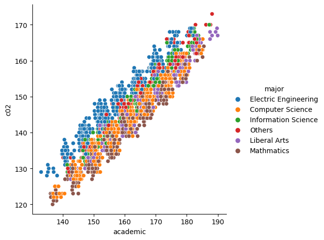
<Figure size 640x480 with 0 Axes>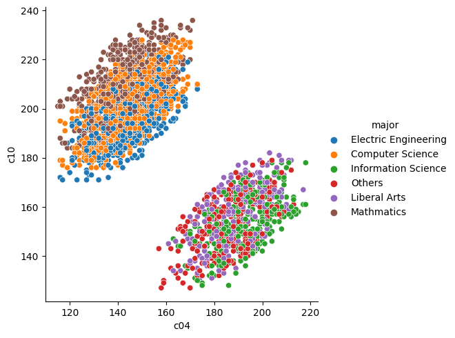
<Figure size 640x480 with 0 Axes>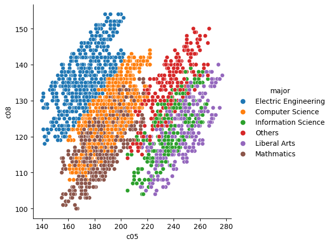
<Figure size 640x480 with 0 Axes>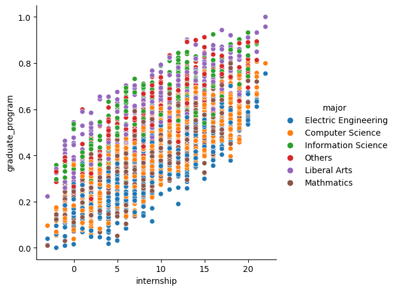
<Figure size 640x480 with 0 Axes>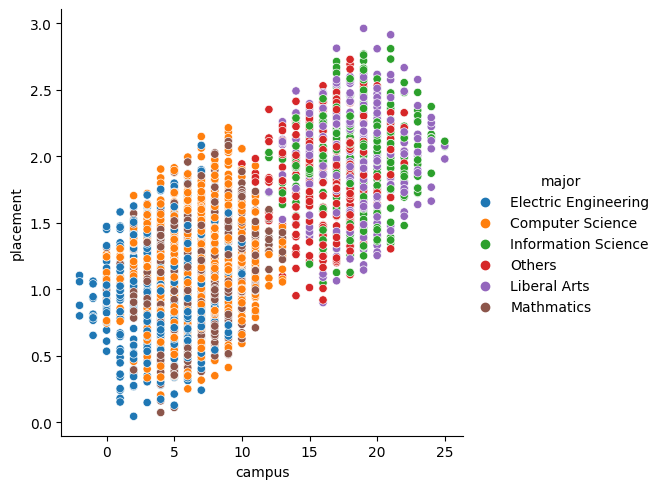
Distributional Plots
Visualize the distribution of FIVE attributes. You should try appropriate and various distributional plots with different choice of attributes.
dis_att = ['campus','internship','graduate_program','industry','placement']
for att in dis_att:
fig = plt.figure()
sns.displot(data=df_student_record,x = att,hue='major',kind='kde',multiple='stack')<Figure size 640x480 with 0 Axes>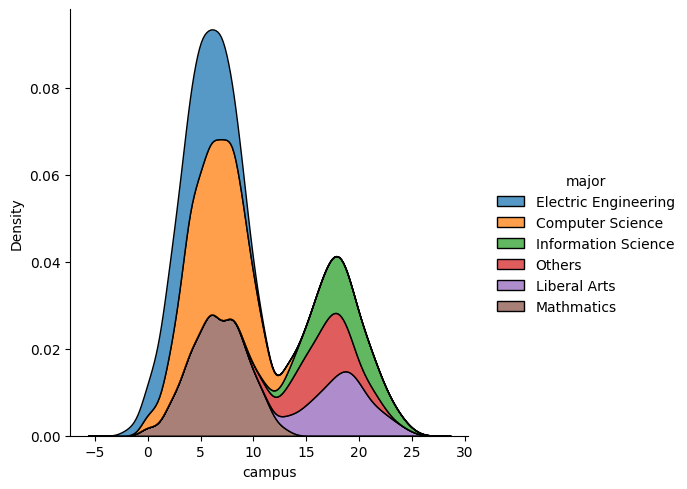
<Figure size 640x480 with 0 Axes>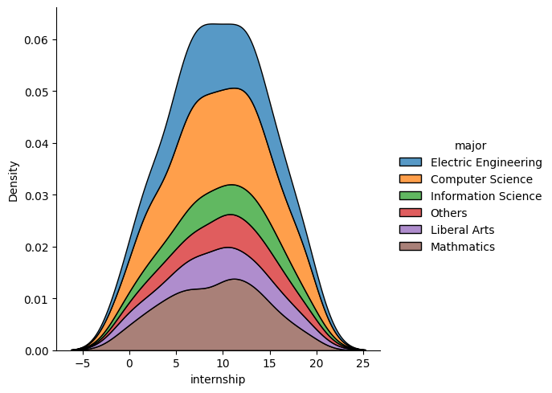
<Figure size 640x480 with 0 Axes>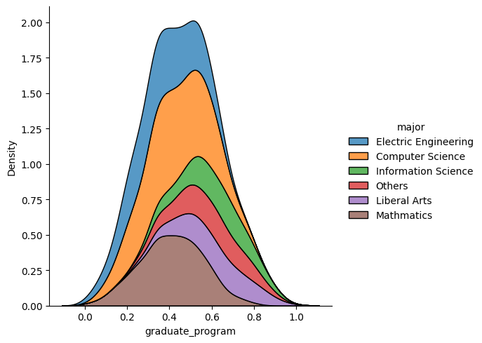
<Figure size 640x480 with 0 Axes>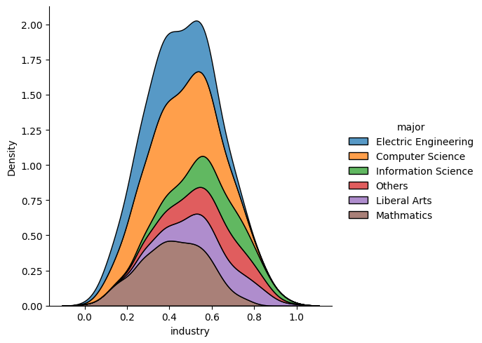
<Figure size 640x480 with 0 Axes>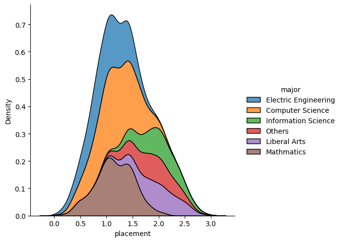
Categorical Plots
Visualize the plots of TWO categorical attributes. You should try appropriate plots with different choice of attributes.
sns.catplot(data=df_student_record,x='major',y='c08',kind='violin')
plt.xticks(rotation=90)(array([0, 1, 2, 3, 4, 5]),
[Text(0, 0, 'Electric Engineering'),
Text(1, 0, 'Computer Science'),
Text(2, 0, 'Information Science'),
Text(3, 0, 'Others'),
Text(4, 0, 'Liberal Arts'),
Text(5, 0, 'Mathmatics')])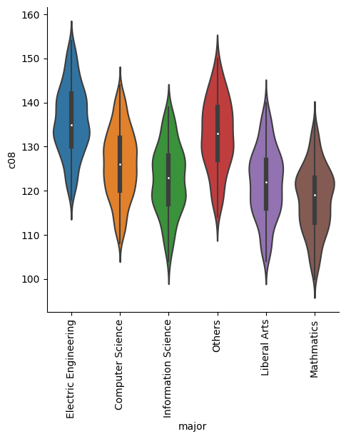
sns.catplot(data=df_student_record,x='major',y='c05',kind='box',hue='gender')
plt.xticks(rotation=90)(array([0, 1, 2, 3, 4, 5]),
[Text(0, 0, 'Electric Engineering'),
Text(1, 0, 'Computer Science'),
Text(2, 0, 'Information Science'),
Text(3, 0, 'Others'),
Text(4, 0, 'Liberal Arts'),
Text(5, 0, 'Mathmatics')])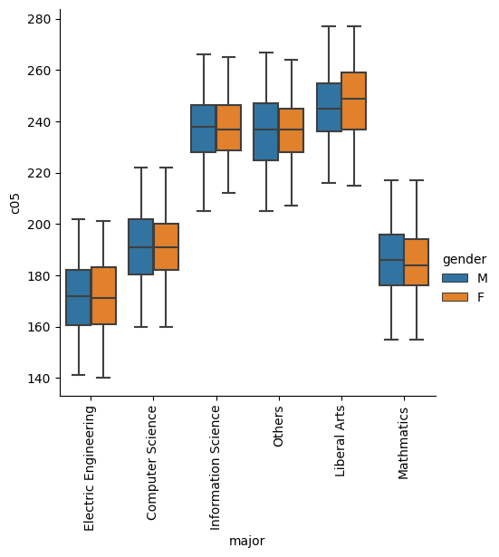
HeatMap
Visualize the correlation of all numeric attributes
fig = plt.figure(figsize=(10,8))
sns.heatmap(correlation,annot=True,vmin=-1)<AxesSubplot: >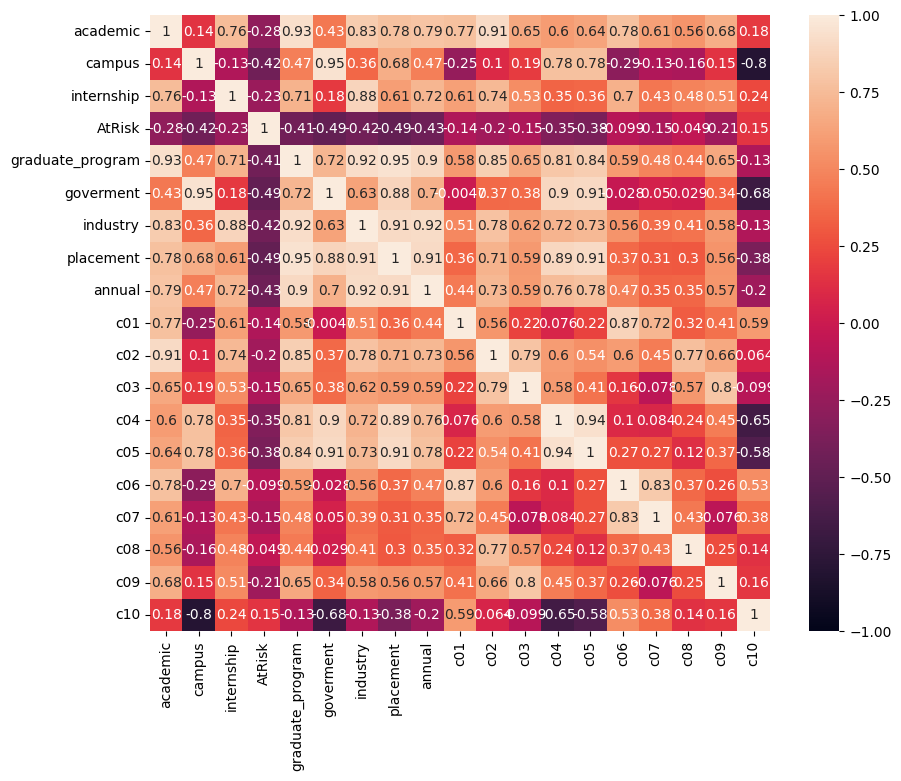
# or I can remove the annotations if they're too distracting (a bit 'cleaner' look)
fig = plt.figure(figsize=(8,5))
sns.heatmap(correlation,vmin=-1)<AxesSubplot: >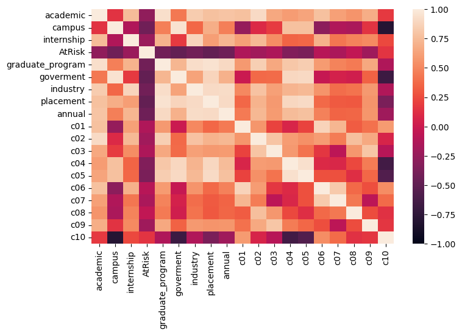
Reasoning
Answer following questions using one or two sentences. 1. Is there any difficulty you met in finishing this question? If yes, how did you solve it? 2. Demostrate your understanding of good visualization by comparing a good plot with a bad plot for the same attribute. Explain why one is good, and why the other one is bad.
Answer to 1: No particular difficulties, other than maybe deciding which visualizations to use (I LOVE playing around with visualizations, so I’ve had a lot of practice.)
Answer to 2:
Question 5: Data Preprocessing (25 points)
You are now going to do further processing of your data to make it ready for analysis.
Dealing with Missing Values
Are there missing values? Try to: 1. Drop all rows with missing values and save the dataframe to df_drop_na. 2. Fill the missing course scores with the mean of the student and save the dataframe to df_fill_stu_mean. 3. Fill the missing course scores with the mean of the entire course and save the dataframe to df_fill_course_mean. 4. Fill the missing annual salary with an appropriate choice of yours and save the dataframe to df_fill_annual. 5. Choose an appropriate method of above, and save the missing value filled dataframe as df_student_record_full.
display(df_student_record.info())
df_student_record.isna().sum()<class 'pandas.core.frame.DataFrame'>
RangeIndex: 3000 entries, 0 to 2999
Data columns (total 24 columns):
# Column Non-Null Count Dtype
--- ------ -------------- -----
0 id 3000 non-null object
1 name 3000 non-null object
2 major 3000 non-null object
3 gender 3000 non-null object
4 academic 3000 non-null float64
5 campus 3000 non-null int64
6 internship 3000 non-null int64
7 AtRisk 3000 non-null int64
8 graduate_program 3000 non-null float64
9 goverment 3000 non-null float64
10 industry 3000 non-null float64
11 placement 3000 non-null float64
12 annual 2852 non-null float64
13 c01 2841 non-null float64
14 c02 2848 non-null float64
15 c03 2864 non-null float64
16 c04 2861 non-null float64
17 c05 2849 non-null float64
18 c06 2860 non-null float64
19 c07 2847 non-null float64
20 c08 2848 non-null float64
21 c09 2834 non-null float64
22 c10 2868 non-null float64
23 elective 3000 non-null object
dtypes: float64(16), int64(3), object(5)
memory usage: 562.6+ KBNoneid 0
name 0
major 0
gender 0
academic 0
campus 0
internship 0
AtRisk 0
graduate_program 0
goverment 0
industry 0
placement 0
annual 148
c01 159
c02 152
c03 136
c04 139
c05 151
c06 140
c07 153
c08 152
c09 166
c10 132
elective 0
dtype: int641. Drop all rows w/ missing
# Drop all rows w/ missing
df_drop_na = df_student_record.dropna()
display(df_drop_na.head())
df_drop_na.info()| id | name | major | gender | academic | campus | internship | AtRisk | graduate_program | goverment | ... | c02 | c03 | c04 | c05 | c06 | c07 | c08 | c09 | c10 | elective | |
|---|---|---|---|---|---|---|---|---|---|---|---|---|---|---|---|---|---|---|---|---|---|
| 1 | CUB0001 | Diana Lopez | Computer Science | M | 178.45 | 4 | 13 | 1 | 0.623424 | 0.322178 | ... | 156.0 | 124.0 | 161.0 | 220.0 | 217.0 | 149.0 | 132.0 | 177.0 | 222.0 | ['Data_Science_Methods' 'Deep_Learning' 'Stats... |
| 3 | CUB0003 | Nicholas Steele | Information Science | M | 176.25 | 17 | 16 | 0 | 0.769059 | 0.797730 | ... | 161.0 | 166.0 | 209.0 | 254.0 | 168.0 | 117.0 | 134.0 | 201.0 | 159.0 | ['Python_for_Data_Science' 'Text_Marketing_Ana... |
| 5 | CUB0005 | Troy Chen | Computer Science | M | 156.05 | 6 | 9 | 0 | 0.345020 | 0.284101 | ... | 138.0 | 113.0 | 135.0 | 184.0 | 173.0 | 136.0 | 128.0 | 148.0 | 197.0 | ['R_for_Data_Science' 'Neural_Networks' 'Data_... |
| 6 | CUB0006 | Mrs. Caroline Rogers | Electric Engineering | F | 171.45 | 5 | 13 | 0 | 0.549825 | 0.332821 | ... | 161.0 | 148.0 | 159.0 | 185.0 | 187.0 | 134.0 | 151.0 | 177.0 | 207.0 | ['Statistical_Modeling' 'Data_Science_Methods'... |
| 9 | CUB0009 | Teresa Hooper | Liberal Arts | M | 166.45 | 21 | 9 | 0 | 0.645446 | 0.853131 | ... | 147.0 | 122.0 | 188.0 | 252.0 | 185.0 | 135.0 | 121.0 | 159.0 | 159.0 | ['Statistical_Inference' 'Neural_Networks'\n '... |
5 rows × 24 columns
<class 'pandas.core.frame.DataFrame'>
Int64Index: 1520 entries, 1 to 2999
Data columns (total 24 columns):
# Column Non-Null Count Dtype
--- ------ -------------- -----
0 id 1520 non-null object
1 name 1520 non-null object
2 major 1520 non-null object
3 gender 1520 non-null object
4 academic 1520 non-null float64
5 campus 1520 non-null int64
6 internship 1520 non-null int64
7 AtRisk 1520 non-null int64
8 graduate_program 1520 non-null float64
9 goverment 1520 non-null float64
10 industry 1520 non-null float64
11 placement 1520 non-null float64
12 annual 1520 non-null float64
13 c01 1520 non-null float64
14 c02 1520 non-null float64
15 c03 1520 non-null float64
16 c04 1520 non-null float64
17 c05 1520 non-null float64
18 c06 1520 non-null float64
19 c07 1520 non-null float64
20 c08 1520 non-null float64
21 c09 1520 non-null float64
22 c10 1520 non-null float64
23 elective 1520 non-null object
dtypes: float64(16), int64(3), object(5)
memory usage: 296.9+ KB2. Fill missing course scores with mean of each student score
df_courses = df_student_record_courses.iloc[:,1:-1].apply(pd.to_numeric).reset_index(drop=True)
df_courses| c01 | c02 | c03 | c04 | c05 | c06 | c07 | c08 | c09 | c10 | |
|---|---|---|---|---|---|---|---|---|---|---|
| 0 | 168.0 | 136.0 | 122.0 | 124.0 | 147.0 | NaN | 108.0 | 122.0 | 151.0 | 177.0 |
| 1 | 226.5 | 156.0 | 124.0 | 161.0 | 220.0 | 217.0 | 149.0 | 132.0 | 177.0 | 222.0 |
| 2 | 157.5 | 134.0 | 134.0 | NaN | 144.0 | 138.0 | 105.0 | 128.0 | 157.0 | 179.0 |
| 3 | 193.5 | 161.0 | 166.0 | 209.0 | 254.0 | 168.0 | 117.0 | 134.0 | 201.0 | 159.0 |
| 4 | 180.0 | 138.0 | NaN | 131.0 | 171.0 | 163.0 | 124.0 | 125.0 | 149.0 | 186.0 |
| ... | ... | ... | ... | ... | ... | ... | ... | ... | ... | ... |
| 2995 | 211.5 | 160.0 | NaN | 190.0 | 249.0 | 192.0 | 142.0 | 145.0 | 168.0 | 163.0 |
| 2996 | 183.0 | 149.0 | 139.0 | 142.0 | 174.0 | 170.0 | 114.0 | 131.0 | 176.0 | 198.0 |
| 2997 | 202.5 | 151.0 | NaN | 178.0 | 236.0 | 169.0 | 136.0 | 139.0 | 158.0 | 152.0 |
| 2998 | 211.5 | 139.0 | 135.0 | 146.0 | 186.0 | 181.0 | 116.0 | 109.0 | 180.0 | 210.0 |
| 2999 | 189.0 | 138.0 | 126.0 | 136.0 | 171.0 | 167.0 | 118.0 | 117.0 | 169.0 | 202.0 |
3000 rows × 10 columns
# mean of scores of each student
stud_mean = df_courses.mean(axis=1)
stud_mean0 139.444444
1 178.450000
2 141.833333
3 176.250000
4 151.888889
...
2995 180.055556
2996 157.600000
2997 169.055556
2998 161.350000
2999 153.300000
Length: 3000, dtype: float64# I don't think this is the best method, but it's the only way that I got to work
df_fill_stu_mean = df_courses.copy()
for i in range(len(df_courses)):
row = df_courses.iloc[i]
df_fill_stu_mean.iloc[i] = row.fillna(round(row.mean(),2))
# I rounded to 100ths place to see where the values were filled easier
df_fill_stu_mean| c01 | c02 | c03 | c04 | c05 | c06 | c07 | c08 | c09 | c10 | |
|---|---|---|---|---|---|---|---|---|---|---|
| 0 | 168.0 | 136.0 | 122.00 | 124.00 | 147.0 | 139.44 | 108.0 | 122.0 | 151.0 | 177.0 |
| 1 | 226.5 | 156.0 | 124.00 | 161.00 | 220.0 | 217.00 | 149.0 | 132.0 | 177.0 | 222.0 |
| 2 | 157.5 | 134.0 | 134.00 | 141.83 | 144.0 | 138.00 | 105.0 | 128.0 | 157.0 | 179.0 |
| 3 | 193.5 | 161.0 | 166.00 | 209.00 | 254.0 | 168.00 | 117.0 | 134.0 | 201.0 | 159.0 |
| 4 | 180.0 | 138.0 | 151.89 | 131.00 | 171.0 | 163.00 | 124.0 | 125.0 | 149.0 | 186.0 |
| ... | ... | ... | ... | ... | ... | ... | ... | ... | ... | ... |
| 2995 | 211.5 | 160.0 | 180.06 | 190.00 | 249.0 | 192.00 | 142.0 | 145.0 | 168.0 | 163.0 |
| 2996 | 183.0 | 149.0 | 139.00 | 142.00 | 174.0 | 170.00 | 114.0 | 131.0 | 176.0 | 198.0 |
| 2997 | 202.5 | 151.0 | 169.06 | 178.00 | 236.0 | 169.00 | 136.0 | 139.0 | 158.0 | 152.0 |
| 2998 | 211.5 | 139.0 | 135.00 | 146.00 | 186.0 | 181.00 | 116.0 | 109.0 | 180.0 | 210.0 |
| 2999 | 189.0 | 138.0 | 126.00 | 136.00 | 171.0 | 167.00 | 118.0 | 117.0 | 169.0 | 202.0 |
3000 rows × 10 columns
3. Fill missing course scores with mean of entire course
df_courses.mean(axis=0)c01 200.346885
c02 146.357444
c03 128.698324
c04 157.319119
c05 200.484380
c06 175.811888
c07 126.174570
c08 126.252809
c09 170.005999
c10 188.690028
dtype: float64# I rounded to 100ths place to see where the values were filled easier
df_fill_course_mean = df_courses.fillna(round(df_courses.mean(axis=0),2))
df_fill_course_mean| c01 | c02 | c03 | c04 | c05 | c06 | c07 | c08 | c09 | c10 | |
|---|---|---|---|---|---|---|---|---|---|---|
| 0 | 168.0 | 136.0 | 122.0 | 124.00 | 147.0 | 175.81 | 108.0 | 122.0 | 151.0 | 177.0 |
| 1 | 226.5 | 156.0 | 124.0 | 161.00 | 220.0 | 217.00 | 149.0 | 132.0 | 177.0 | 222.0 |
| 2 | 157.5 | 134.0 | 134.0 | 157.32 | 144.0 | 138.00 | 105.0 | 128.0 | 157.0 | 179.0 |
| 3 | 193.5 | 161.0 | 166.0 | 209.00 | 254.0 | 168.00 | 117.0 | 134.0 | 201.0 | 159.0 |
| 4 | 180.0 | 138.0 | 128.7 | 131.00 | 171.0 | 163.00 | 124.0 | 125.0 | 149.0 | 186.0 |
| ... | ... | ... | ... | ... | ... | ... | ... | ... | ... | ... |
| 2995 | 211.5 | 160.0 | 128.7 | 190.00 | 249.0 | 192.00 | 142.0 | 145.0 | 168.0 | 163.0 |
| 2996 | 183.0 | 149.0 | 139.0 | 142.00 | 174.0 | 170.00 | 114.0 | 131.0 | 176.0 | 198.0 |
| 2997 | 202.5 | 151.0 | 128.7 | 178.00 | 236.0 | 169.00 | 136.0 | 139.0 | 158.0 | 152.0 |
| 2998 | 211.5 | 139.0 | 135.0 | 146.00 | 186.0 | 181.00 | 116.0 | 109.0 | 180.0 | 210.0 |
| 2999 | 189.0 | 138.0 | 126.0 | 136.00 | 171.0 | 167.00 | 118.0 | 117.0 | 169.0 | 202.0 |
3000 rows × 10 columns
4. Fill missing annual salary w/ appropriate choice of yours
df_fill_annual = df_student_record[['annual']].fillna(df_student_record['annual'].mean())
df_fill_annual| annual | |
|---|---|
| 0 | 44384.842252 |
| 1 | 136786.533445 |
| 2 | 140886.637437 |
| 3 | 243255.134630 |
| 4 | 51483.725756 |
| ... | ... |
| 2995 | 140886.637437 |
| 2996 | 145951.154752 |
| 2997 | 141435.622842 |
| 2998 | 123132.874432 |
| 2999 | 107224.388577 |
3000 rows × 1 columns
5. Choose appropriate method, and save missing filled dataframe
course_col = ['c0{}'.format(i) for i in range(1,10)] + ['c10']
course_col['c01', 'c02', 'c03', 'c04', 'c05', 'c06', 'c07', 'c08', 'c09', 'c10']df_student_record_full = df_student_record.copy()
df_student_record_full['annual'] = df_fill_annual
df_student_record_full[course_col] = df_fill_stu_mean
display(df_student_record_full.isna().sum())
df_student_record_full.head()id 0
name 0
major 0
gender 0
academic 0
campus 0
internship 0
AtRisk 0
graduate_program 0
goverment 0
industry 0
placement 0
annual 0
c01 0
c02 0
c03 0
c04 0
c05 0
c06 0
c07 0
c08 0
c09 0
c10 0
elective 0
dtype: int64| id | name | major | gender | academic | campus | internship | AtRisk | graduate_program | goverment | ... | c02 | c03 | c04 | c05 | c06 | c07 | c08 | c09 | c10 | elective | |
|---|---|---|---|---|---|---|---|---|---|---|---|---|---|---|---|---|---|---|---|---|---|
| 0 | CUB0000 | Lisa Tucker | Electric Engineering | M | 140.40 | 4 | 4 | 1 | 0.095158 | 0.120676 | ... | 136.0 | 122.00 | 124.00 | 147.0 | 139.44 | 108.0 | 122.0 | 151.0 | 177.0 | ['Statistical_Modeling' 'Data_Mining' 'Stats_f... |
| 1 | CUB0001 | Diana Lopez | Computer Science | M | 178.45 | 4 | 13 | 1 | 0.623424 | 0.322178 | ... | 156.0 | 124.00 | 161.00 | 220.0 | 217.00 | 149.0 | 132.0 | 177.0 | 222.0 | ['Data_Science_Methods' 'Deep_Learning' 'Stats... |
| 2 | CUB0002 | Angela Huber | Electric Engineering | M | 140.15 | 2 | 6 | 1 | 0.083423 | 0.063620 | ... | 134.0 | 134.00 | 141.83 | 144.0 | 138.00 | 105.0 | 128.0 | 157.0 | 179.0 | ['Data_Mining' 'Datacenter_Computing' 'Databas... |
| 3 | CUB0003 | Nicholas Steele | Information Science | M | 176.25 | 17 | 16 | 0 | 0.769059 | 0.797730 | ... | 161.0 | 166.00 | 209.00 | 254.0 | 168.00 | 117.0 | 134.0 | 201.0 | 159.0 | ['Python_for_Data_Science' 'Text_Marketing_Ana... |
| 4 | CUB0004 | Deborah Porter | Computer Science | M | 148.50 | 7 | 2 | 1 | 0.214019 | 0.241057 | ... | 138.0 | 151.89 | 131.00 | 171.0 | 163.00 | 124.0 | 125.0 | 149.0 | 186.0 | ['Statistical_Learning' 'Statistical_Inference... |
5 rows × 24 columns
Dealing with Outliers
Continue with df_student_record_full and try to: 1. Use box plot to detect possible outliers. 2. Use IQR to detect possible outliers of all attributes, and create a column Outlier, in which if a record contains any attributes are possible outliers, it is Abnormal, otherwise Normal. 3. Drop all abnormal records, and save it as df_student_record_n, and use box plot to verify there is no more outliers. You will NOT use df_student_record_n for further process. It is just for this step.
1. Boxplots to detect possible outliers
df_student_record.info()<class 'pandas.core.frame.DataFrame'>
RangeIndex: 3000 entries, 0 to 2999
Data columns (total 24 columns):
# Column Non-Null Count Dtype
--- ------ -------------- -----
0 id 3000 non-null object
1 name 3000 non-null object
2 major 3000 non-null object
3 gender 3000 non-null object
4 academic 3000 non-null float64
5 campus 3000 non-null int64
6 internship 3000 non-null int64
7 AtRisk 3000 non-null int64
8 graduate_program 3000 non-null float64
9 goverment 3000 non-null float64
10 industry 3000 non-null float64
11 placement 3000 non-null float64
12 annual 2852 non-null float64
13 c01 2841 non-null float64
14 c02 2848 non-null float64
15 c03 2864 non-null float64
16 c04 2861 non-null float64
17 c05 2849 non-null float64
18 c06 2860 non-null float64
19 c07 2847 non-null float64
20 c08 2848 non-null float64
21 c09 2834 non-null float64
22 c10 2868 non-null float64
23 elective 3000 non-null object
dtypes: float64(16), int64(3), object(5)
memory usage: 562.6+ KBsns.boxplot(data = df_student_record_full[['academic','campus','internship']])<AxesSubplot: >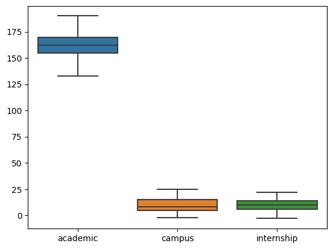
sns.boxplot(data = df_student_record_full.loc[:,'graduate_program':'placement'])<AxesSubplot: >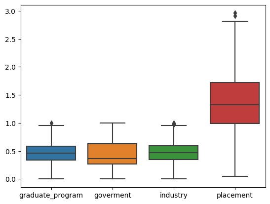
fig = plt.figure(figsize=(3,5))
sns.boxplot(data = df_student_record_full['annual'])
plt.title('annual')Text(0.5, 1.0, 'annual')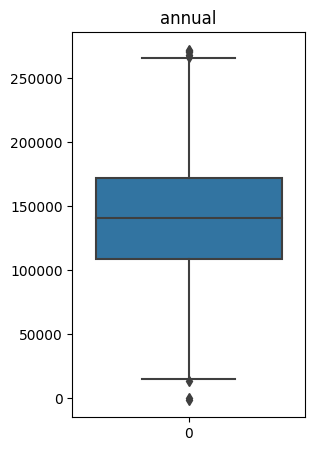
sns.boxplot(data = df_student_record_full[course_col])<AxesSubplot: >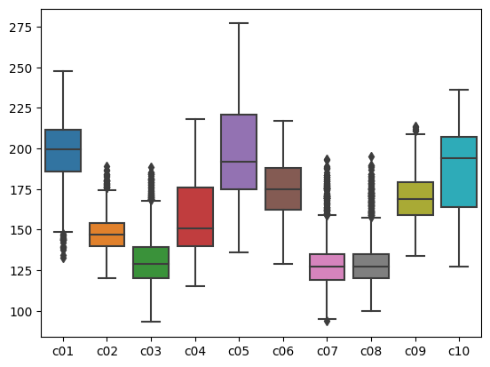
2. Use IQR to detect possible outliers & create “Outlier” column (w/ attributes ‘Abnormal’ and ‘Normal’)
df_student_record_full.quantile([0.25,0.75])| academic | campus | internship | AtRisk | graduate_program | goverment | industry | placement | annual | c01 | c02 | c03 | c04 | c05 | c06 | c07 | c08 | c09 | c10 | |
|---|---|---|---|---|---|---|---|---|---|---|---|---|---|---|---|---|---|---|---|
| 0.25 | 154.6375 | 5.0 | 6.0 | 0.0 | 0.334574 | 0.264442 | 0.342461 | 0.985791 | 109086.287333 | 186.0 | 140.0 | 120.00 | 140.0 | 175.0 | 162.0 | 119.0 | 120.0 | 159.0 | 164.0 |
| 0.75 | 169.7500 | 15.0 | 14.0 | 1.0 | 0.583821 | 0.632029 | 0.591504 | 1.722700 | 172266.927283 | 211.5 | 154.0 | 139.25 | 176.0 | 221.0 | 188.0 | 135.0 | 135.0 | 179.0 | 207.0 |
df_student_record_full.head()| id | name | major | gender | academic | campus | internship | AtRisk | graduate_program | goverment | ... | c02 | c03 | c04 | c05 | c06 | c07 | c08 | c09 | c10 | elective | |
|---|---|---|---|---|---|---|---|---|---|---|---|---|---|---|---|---|---|---|---|---|---|
| 0 | CUB0000 | Lisa Tucker | Electric Engineering | M | 140.40 | 4 | 4 | 1 | 0.095158 | 0.120676 | ... | 136.0 | 122.00 | 124.00 | 147.0 | 139.44 | 108.0 | 122.0 | 151.0 | 177.0 | ['Statistical_Modeling' 'Data_Mining' 'Stats_f... |
| 1 | CUB0001 | Diana Lopez | Computer Science | M | 178.45 | 4 | 13 | 1 | 0.623424 | 0.322178 | ... | 156.0 | 124.00 | 161.00 | 220.0 | 217.00 | 149.0 | 132.0 | 177.0 | 222.0 | ['Data_Science_Methods' 'Deep_Learning' 'Stats... |
| 2 | CUB0002 | Angela Huber | Electric Engineering | M | 140.15 | 2 | 6 | 1 | 0.083423 | 0.063620 | ... | 134.0 | 134.00 | 141.83 | 144.0 | 138.00 | 105.0 | 128.0 | 157.0 | 179.0 | ['Data_Mining' 'Datacenter_Computing' 'Databas... |
| 3 | CUB0003 | Nicholas Steele | Information Science | M | 176.25 | 17 | 16 | 0 | 0.769059 | 0.797730 | ... | 161.0 | 166.00 | 209.00 | 254.0 | 168.00 | 117.0 | 134.0 | 201.0 | 159.0 | ['Python_for_Data_Science' 'Text_Marketing_Ana... |
| 4 | CUB0004 | Deborah Porter | Computer Science | M | 148.50 | 7 | 2 | 1 | 0.214019 | 0.241057 | ... | 138.0 | 151.89 | 131.00 | 171.0 | 163.00 | 124.0 | 125.0 | 149.0 | 186.0 | ['Statistical_Learning' 'Statistical_Inference... |
5 rows × 24 columns
df_student_record_full.iloc[:,4:23] > df_student_record_full.quantile(0.75)| academic | campus | internship | AtRisk | graduate_program | goverment | industry | placement | annual | c01 | c02 | c03 | c04 | c05 | c06 | c07 | c08 | c09 | c10 | |
|---|---|---|---|---|---|---|---|---|---|---|---|---|---|---|---|---|---|---|---|
| 0 | False | False | False | False | False | False | False | False | False | False | False | False | False | False | False | False | False | False | False |
| 1 | True | False | False | False | True | False | False | False | False | True | True | False | False | False | True | True | False | False | True |
| 2 | False | False | False | False | False | False | False | False | False | False | False | False | False | False | False | False | False | False | False |
| 3 | True | True | True | False | True | True | True | True | True | False | True | True | True | True | False | False | False | True | False |
| 4 | False | False | False | False | False | False | False | False | False | False | False | True | False | False | False | False | False | False | False |
| ... | ... | ... | ... | ... | ... | ... | ... | ... | ... | ... | ... | ... | ... | ... | ... | ... | ... | ... | ... |
| 2995 | True | False | False | False | True | False | False | True | False | False | True | True | True | True | True | True | True | False | False |
| 2996 | False | False | True | False | False | False | False | False | False | False | False | False | False | False | False | False | False | False | False |
| 2997 | False | True | False | False | False | True | False | False | False | False | False | True | True | True | False | True | True | False | False |
| 2998 | False | False | False | False | False | False | False | False | False | False | False | False | False | False | False | False | False | True | True |
| 2999 | False | False | False | False | False | False | False | False | False | False | False | False | False | False | False | False | False | False | False |
3000 rows × 19 columns
df_student_record_full.iloc[:,4:23] < df_student_record_full.quantile(0.25)| academic | campus | internship | AtRisk | graduate_program | goverment | industry | placement | annual | c01 | c02 | c03 | c04 | c05 | c06 | c07 | c08 | c09 | c10 | |
|---|---|---|---|---|---|---|---|---|---|---|---|---|---|---|---|---|---|---|---|
| 0 | True | True | True | False | True | True | True | True | True | True | True | False | True | True | True | True | False | True | False |
| 1 | False | True | False | False | False | False | False | False | False | False | False | False | False | False | False | False | False | False | False |
| 2 | True | True | False | False | True | True | True | True | False | True | True | False | False | True | True | True | False | True | False |
| 3 | False | False | False | False | False | False | False | False | False | False | False | False | False | False | False | True | False | False | True |
| 4 | True | False | True | False | True | True | True | True | True | True | True | False | True | True | False | False | False | True | False |
| ... | ... | ... | ... | ... | ... | ... | ... | ... | ... | ... | ... | ... | ... | ... | ... | ... | ... | ... | ... |
| 2995 | False | False | False | False | False | False | False | False | False | False | False | False | False | False | False | False | False | False | True |
| 2996 | False | False | False | False | False | False | False | False | False | True | False | False | False | True | False | True | False | False | False |
| 2997 | False | False | True | False | False | False | False | False | False | False | False | False | False | False | False | False | False | True | True |
| 2998 | False | True | False | False | False | True | False | False | False | False | True | False | False | False | False | True | True | False | False |
| 2999 | True | True | False | False | True | True | False | True | True | False | True | False | True | True | False | True | True | False | False |
3000 rows × 19 columns
conditions = [
(df_student_record_full.iloc[:,4:23] > df_student_record_full.quantile(0.75)),
(df_student_record_full.iloc[:,4:23] < df_student_record_full.quantile(0.25)),
]
values = ['Abnormal','Abnormal']
np.select(conditions,values,default='Normal')array([['Abnormal', 'Abnormal', 'Abnormal', ..., 'Normal', 'Abnormal',
'Normal'],
['Abnormal', 'Abnormal', 'Normal', ..., 'Normal', 'Normal',
'Abnormal'],
['Abnormal', 'Abnormal', 'Normal', ..., 'Normal', 'Abnormal',
'Normal'],
...,
['Normal', 'Abnormal', 'Abnormal', ..., 'Abnormal', 'Abnormal',
'Abnormal'],
['Normal', 'Abnormal', 'Normal', ..., 'Abnormal', 'Abnormal',
'Abnormal'],
['Abnormal', 'Abnormal', 'Normal', ..., 'Abnormal', 'Normal',
'Normal']], dtype='<U8')3. Drop all abnormal records
# not answeredDealing with Scales
Continue with df_student_record_full. Are there inconsistancy of the scaling? Try to: 1. Convert all course scores using min-max normalization with min = 0 and max = 100 2. Convert all course scores using Z-score 3. Convert all course scores using decimal scaling 4. Convert the annual salary using min-max normalization with min = 0 and max = 100 5. Convert the annual salary using Z-score 6. Convert the annual salary using decimal scaling 7. Choose the appropriate normalization method for above attributes, and save your dataframe as df_student_record_full_normal
from sklearn.preprocessing import MinMaxScaler
from sklearn.preprocessing import StandardScalerdf_full_courses = df_student_record_full[course_col]
df_full_courses.info()<class 'pandas.core.frame.DataFrame'>
RangeIndex: 3000 entries, 0 to 2999
Data columns (total 10 columns):
# Column Non-Null Count Dtype
--- ------ -------------- -----
0 c01 3000 non-null float64
1 c02 3000 non-null float64
2 c03 3000 non-null float64
3 c04 3000 non-null float64
4 c05 3000 non-null float64
5 c06 3000 non-null float64
6 c07 3000 non-null float64
7 c08 3000 non-null float64
8 c09 3000 non-null float64
9 c10 3000 non-null float64
dtypes: float64(10)
memory usage: 234.5 KB1. Convert all course scores using min-max normalization (min=0,max=100)
mmscale = MinMaxScaler((0.0,100.0))
courses_full_mm_scale = pd.DataFrame(mmscale.fit_transform(df_full_courses),columns=df_full_courses.columns)
courses_full_mm_scale.describe()| c01 | c02 | c03 | c04 | c05 | c06 | c07 | c08 | c09 | c10 | |
|---|---|---|---|---|---|---|---|---|---|---|
| count | 3000.000000 | 3000.000000 | 3000.000000 | 3000.000000 | 3000.000000 | 3000.000000 | 3000.000000 | 3000.000000 | 3000.000000 | 3000.000000 |
| mean | 57.049988 | 39.492957 | 39.203684 | 41.299929 | 44.336594 | 52.318561 | 34.302654 | 29.751316 | 44.429975 | 55.403872 |
| std | 16.290379 | 15.118273 | 16.243707 | 22.282691 | 21.730744 | 20.278240 | 13.809971 | 14.220561 | 17.823627 | 23.225969 |
| min | 0.000000 | 0.000000 | 0.000000 | 0.000000 | 0.000000 | 0.000000 | 0.000000 | 0.000000 | 0.000000 | 0.000000 |
| 25% | 46.493823 | 28.985507 | 28.337531 | 24.271845 | 27.802945 | 37.500000 | 25.070197 | 21.003991 | 31.344401 | 33.944954 |
| 50% | 58.239081 | 39.130435 | 37.783375 | 34.951456 | 39.835787 | 52.272727 | 33.092659 | 28.355388 | 43.827238 | 61.467890 |
| 75% | 68.679311 | 49.275362 | 48.541142 | 59.223301 | 60.362401 | 67.045455 | 41.115122 | 36.756984 | 56.310074 | 73.394495 |
| max | 100.000000 | 100.000000 | 100.000000 | 100.000000 | 100.000000 | 100.000000 | 100.000000 | 100.000000 | 100.000000 | 100.000000 |
2. Convert all course scores using Z-score normalization
znorm = StandardScaler()
courses_full_zscale = pd.DataFrame(znorm.fit_transform(df_full_courses),columns=df_full_courses.columns)
courses_full_zscale.describe()| c01 | c02 | c03 | c04 | c05 | c06 | c07 | c08 | c09 | c10 | |
|---|---|---|---|---|---|---|---|---|---|---|
| count | 3.000000e+03 | 3.000000e+03 | 3.000000e+03 | 3.000000e+03 | 3.000000e+03 | 3.000000e+03 | 3.000000e+03 | 3.000000e+03 | 3.000000e+03 | 3.000000e+03 |
| mean | -8.218611e-16 | -1.537141e-15 | 1.252924e-15 | -9.000208e-17 | 5.494864e-16 | -1.752672e-16 | 5.897505e-16 | -4.476419e-16 | -3.386920e-16 | 1.132724e-15 |
| std | 1.000167e+00 | 1.000167e+00 | 1.000167e+00 | 1.000167e+00 | 1.000167e+00 | 1.000167e+00 | 1.000167e+00 | 1.000167e+00 | 1.000167e+00 | 1.000167e+00 |
| min | -3.502650e+00 | -2.612702e+00 | -2.413871e+00 | -1.853762e+00 | -2.040611e+00 | -2.580465e+00 | -2.484319e+00 | -2.092483e+00 | -2.493173e+00 | -2.385825e+00 |
| 25% | -6.481080e-01 | -6.951324e-01 | -6.690569e-01 | -7.643118e-01 | -7.609682e-01 | -7.308835e-01 | -6.686471e-01 | -6.152207e-01 | -7.342925e-01 | -9.240732e-01 |
| 50% | 7.300574e-02 | -2.398304e-02 | -8.745204e-02 | -2.849535e-01 | -2.071516e-01 | -2.260599e-03 | -8.763207e-02 | -9.817907e-02 | -3.382243e-02 | 2.611314e-01 |
| 75% | 7.139957e-01 | 6.471663e-01 | 5.749312e-01 | 8.044971e-01 | 7.375946e-01 | 7.263623e-01 | 4.933829e-01 | 4.927257e-01 | 6.666476e-01 | 7.747200e-01 |
| max | 2.636966e+00 | 4.002913e+00 | 3.743385e+00 | 2.634774e+00 | 2.561932e+00 | 2.351752e+00 | 4.758033e+00 | 4.940761e+00 | 3.118293e+00 | 1.920418e+00 |
3. Convert all course scores using decimal scaling
df_full_courses.max()c01 247.50
c02 189.00
c03 188.28
c04 218.00
c05 277.00
c06 217.00
c07 193.72
c08 195.22
c09 214.00
c10 236.00
dtype: float64So all course score maximum values have order of magnitude of 2 (i.e. are in the hundreds) and decimal scaling works as follows
\(v' = \frac{v}{10^j}\) where \(j\) is the smallest integer, such that max(|v'|)\(<1\)
thus, in this case, \(j=3\).
courses_full_decscale = df_full_courses/(10**3)
courses_full_decscale.describe()| c01 | c02 | c03 | c04 | c05 | c06 | c07 | c08 | c09 | c10 | |
|---|---|---|---|---|---|---|---|---|---|---|
| count | 3000.000000 | 3000.000000 | 3000.000000 | 3000.000000 | 3000.000000 | 3000.000000 | 3000.000000 | 3000.000000 | 3000.000000 | 3000.000000 |
| mean | 0.198133 | 0.147250 | 0.130353 | 0.157539 | 0.198359 | 0.175040 | 0.128207 | 0.128329 | 0.169483 | 0.187390 |
| std | 0.018724 | 0.010432 | 0.015477 | 0.022951 | 0.030701 | 0.017845 | 0.013771 | 0.013541 | 0.014279 | 0.025316 |
| min | 0.132560 | 0.120000 | 0.093000 | 0.115000 | 0.135720 | 0.129000 | 0.094000 | 0.100000 | 0.133890 | 0.127000 |
| 25% | 0.186000 | 0.140000 | 0.120000 | 0.140000 | 0.175000 | 0.162000 | 0.119000 | 0.120000 | 0.159000 | 0.164000 |
| 50% | 0.199500 | 0.147000 | 0.129000 | 0.151000 | 0.192000 | 0.175000 | 0.127000 | 0.127000 | 0.169000 | 0.194000 |
| 75% | 0.211500 | 0.154000 | 0.139250 | 0.176000 | 0.221000 | 0.188000 | 0.135000 | 0.135000 | 0.179000 | 0.207000 |
| max | 0.247500 | 0.189000 | 0.188280 | 0.218000 | 0.277000 | 0.217000 | 0.193720 | 0.195220 | 0.214000 | 0.236000 |
4. Convert the annual salary using min-max normalization (min=0, max=100)
mmscale = MinMaxScaler((0.0,100.0))
annual_df_full = df_student_record_full[['annual']]
annual_mm_scale = pd.DataFrame(mmscale.fit_transform(annual_df_full),columns=['annual'])
annual_mm_scale.describe()| annual | |
|---|---|
| count | 3000.000000 |
| mean | 51.943021 |
| std | 17.118583 |
| min | 0.000000 |
| 25% | 40.323574 |
| 50% | 51.943021 |
| 75% | 63.408985 |
| max | 100.000000 |
5. Convert annual salary using Z-score
znorm = StandardScaler()
annual_zscale = pd.DataFrame(znorm.fit_transform(annual_df_full),columns=['annual'])
annual_zscale.describe()| annual | |
|---|---|
| count | 3.000000e+03 |
| mean | 1.657933e-17 |
| std | 1.000167e+00 |
| min | -3.034812e+00 |
| 25% | -6.788754e-01 |
| 50% | 0.000000e+00 |
| 75% | 6.699079e-01 |
| max | 2.807767e+00 |
6. Convert annual salary using decimal scaling
annual_df_full.max()annual 272409.990797
dtype: float64So the annual salary maximum value has an order of magnitude of 5 (i.e. are in the hundred-thousands) and decimal scaling works as follows
\(v' = \frac{v}{10^j}\) where \(j\) is the smallest integer, such that max(|v'|)\(<1\)
thus, in this case, \(j=6\).
annual_decscale = annual_df_full/(10**6)
annual_decscale.describe()| annual | |
|---|---|
| count | 3000.000000 |
| mean | 0.140887 |
| std | 0.046850 |
| min | -0.001272 |
| 25% | 0.109086 |
| 50% | 0.140887 |
| 75% | 0.172267 |
| max | 0.272410 |
7. Choose appropriate normalization method for above attributes and save dataframe
# course scores = min-max scale
# annual salary = z-score
df_student_record_full_normal = df_student_record_full.copy()
df_student_record_full_normal[course_col] = courses_full_mm_scale
df_student_record_full_normal['annual'] = annual_zscale
df_student_record_full_normal.describe()| academic | campus | internship | AtRisk | graduate_program | goverment | industry | placement | annual | c01 | c02 | c03 | c04 | c05 | c06 | c07 | c08 | c09 | c10 | |
|---|---|---|---|---|---|---|---|---|---|---|---|---|---|---|---|---|---|---|---|
| count | 3000.000000 | 3000.000000 | 3000.000000 | 3000.000000 | 3000.000000 | 3000.000000 | 3000.000000 | 3000.000000 | 3.000000e+03 | 3000.000000 | 3000.000000 | 3000.000000 | 3000.000000 | 3000.000000 | 3000.000000 | 3000.000000 | 3000.000000 | 3000.000000 | 3000.000000 |
| mean | 161.981400 | 9.452333 | 9.569000 | 0.324333 | 0.461342 | 0.431822 | 0.470863 | 1.364027 | 1.657933e-17 | 57.049988 | 39.492957 | 39.203684 | 41.299929 | 44.336594 | 52.318561 | 34.302654 | 29.751316 | 44.429975 | 55.403872 |
| std | 10.365338 | 6.021778 | 5.340794 | 0.490464 | 0.177539 | 0.225588 | 0.176013 | 0.528017 | 1.000167e+00 | 16.290379 | 15.118273 | 16.243707 | 22.282691 | 21.730744 | 20.278240 | 13.809971 | 14.220561 | 17.823627 | 23.225969 |
| min | 133.050000 | -2.000000 | -3.000000 | 0.000000 | 0.000000 | 0.000000 | 0.000000 | 0.043074 | -3.034812e+00 | 0.000000 | 0.000000 | 0.000000 | 0.000000 | 0.000000 | 0.000000 | 0.000000 | 0.000000 | 0.000000 | 0.000000 |
| 25% | 154.637500 | 5.000000 | 6.000000 | 0.000000 | 0.334574 | 0.264442 | 0.342461 | 0.985791 | -6.788754e-01 | 46.493823 | 28.985507 | 28.337531 | 24.271845 | 27.802945 | 37.500000 | 25.070197 | 21.003991 | 31.344401 | 33.944954 |
| 50% | 161.850000 | 8.000000 | 10.000000 | 0.000000 | 0.460607 | 0.360048 | 0.472252 | 1.327008 | 0.000000e+00 | 58.239081 | 39.130435 | 37.783375 | 34.951456 | 39.835787 | 52.272727 | 33.092659 | 28.355388 | 43.827238 | 61.467890 |
| 75% | 169.750000 | 15.000000 | 14.000000 | 1.000000 | 0.583821 | 0.632029 | 0.591504 | 1.722700 | 6.699079e-01 | 68.679311 | 49.275362 | 48.541142 | 59.223301 | 60.362401 | 67.045455 | 41.115122 | 36.756984 | 56.310074 | 73.394495 |
| max | 189.950000 | 25.000000 | 22.000000 | 2.000000 | 1.000000 | 1.000000 | 1.000000 | 2.960918 | 2.807767e+00 | 100.000000 | 100.000000 | 100.000000 | 100.000000 | 100.000000 | 100.000000 | 100.000000 | 100.000000 | 100.000000 | 100.000000 |
Dealing with Continuous Data
Continue with df_student_record_full_normal and try to: 1. Use Histogram to discretize annual salary 2. Use Partitioning to discretize annual salary 3. Choose one method above, and save the descretized dataframe as df_student_record_full_normal_discretized
Dealing with Text (OPTIONAL)
Continue with df_student_record_full_normal_discretized. The attribute elective is a list of elective courses. However, they are not in a proper format of text. You should convert the value to a proper list of courses, so we can do further analysis.
For example, when you convert the elective column to a list electives and print electives[:1], it might be like: ["['Statistical_Modeling' 'Data_Mining' 'Stats_for_Data_Science'\n 'Data_Structures_and_Algorithms' 'Effective_Communication'\n 'Datacenter_Computing' 'Statistical_Learning' 'Data_Science_Methods'\n 'Python_for_Data_Science' 'Machine_Learning']"]
You should convert it to be like: [['Databases', 'Statistical_Inference', 'High_Performance_and_Parallel_Computing', 'Statistical_Learning', 'Big_Data', 'Effective_Communication', 'Statistical_Modeling', 'Machine_Learning', 'R_for_Data_Science', 'Nature_Language_Processing']]
Now, save your dataframe to df_student_record_preprocessed.
# not answeredSave the Processed Data
Now save your data as a csv file with name Student_Record_Processed.csv without index.
# I skipped the 'Dealing with Text' part so I'll just save the normalized and discretized dataframe.
df_student_record_full_normal_discretized.to_csv(index=False)Reasoning
Answer following questions using one or two sentences. 1. Is there any difficulty you met in finishing this question? If yes, how did you solve it? 2. I believe now you are an expert of data wrangling. What are the most important lesson you learned so far and how do you think you will benefit from it?
Question 6: Survey (5 points)
Topic of your choice
- List ONE topic that you prepared but not in this exam (if everything you prepared is in the exam, just pick ONE topic you think most important).
- Why you think this topic is important?
- What question you will make to test this topic?
- How would you answer the question above?
Exam 1
- How do you feel about this exam?
- How shall we improve it?
Assignments
- How do you feel about our assignments so far?
- How shall we improve it?
Mini Projects
- How do you feel about our mini projects so far?
- How shall we improve it?
Data Mining
- How do you feel about our class so far?
- What should be improved for the next part of the semester?
Jasmine’s Answers to Survey Questions
Topic of Choice
… (haven’t thought of something yet) …
Exam1
I think this exam was reasonably and well-built given that we had a full week to complete and covered most of the valuable aspects of what we’ve learned so far.
One thing I would like to point out is that I’m just a little concerned about the length of the exam all in one DeepNote notebook.Things like making sure that everything will showup in the final pdf was one concern. And the loading time greatly slowed down for me as I progressed through the exam (using only one DeepNote notebook for the whole exam). I understand why everything was contained in one notebook as each part was reliant upon the previous part, and I don’t have any specific suggestions to get around to containing the exam to multiple notebooks, but I think it’s just still worth mentioning to consider in the future.
Assignments
Aye, they are a lot of work! But I guess, that makes them just-right as they are. I wouldn’t be lying if I said I wish they were a little less time consuming (but that’s just preference haha); however, on the other hand, I do believe that this is probably the amount of work I would anticipate from a graduate-level course. (I just may have overloaded myself a bit by taking three 3-credit courses this semester… but that’s just my bad)
I think the goal to make them challenging has definitely been met. (Please don’t make them any more challenging from what we’ve seen so far!(haha))
Mini Projects
So far, I like the mini-projects. I mainly like the ones that are the DataCamp Projects that give us step-by-step instructions of what to do and what they want. They are a lot easier to complete that way (which is a nice break from the time-consumin g main-assignments), but not only that I managed to benefit a lot from them. They forced to me to practice things I haven’t used as much before, and I could occasionally use the finished/saved notebooks as reference for useful things in the main-assignments.
I, personally, would prefer that they continue to be the DataCamp Projects that give us specific instructions so that they remain to be the “simple” contrast to the main-assignments.
Data Mining
Overall, I would say I like the class as it is right now. As mentioned, it definitely is a lot of work, but I also think that it may be a reasonable amount of work for a graduate-level course in my opinion.